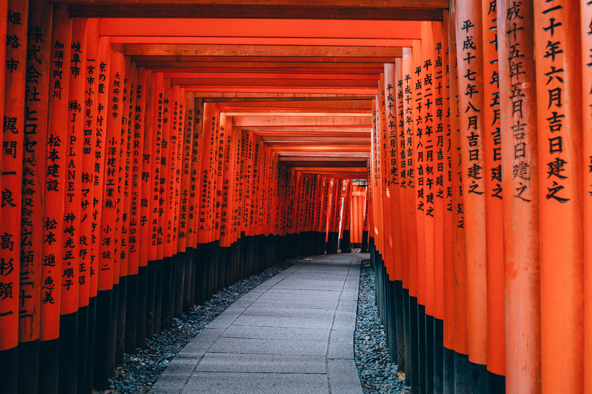
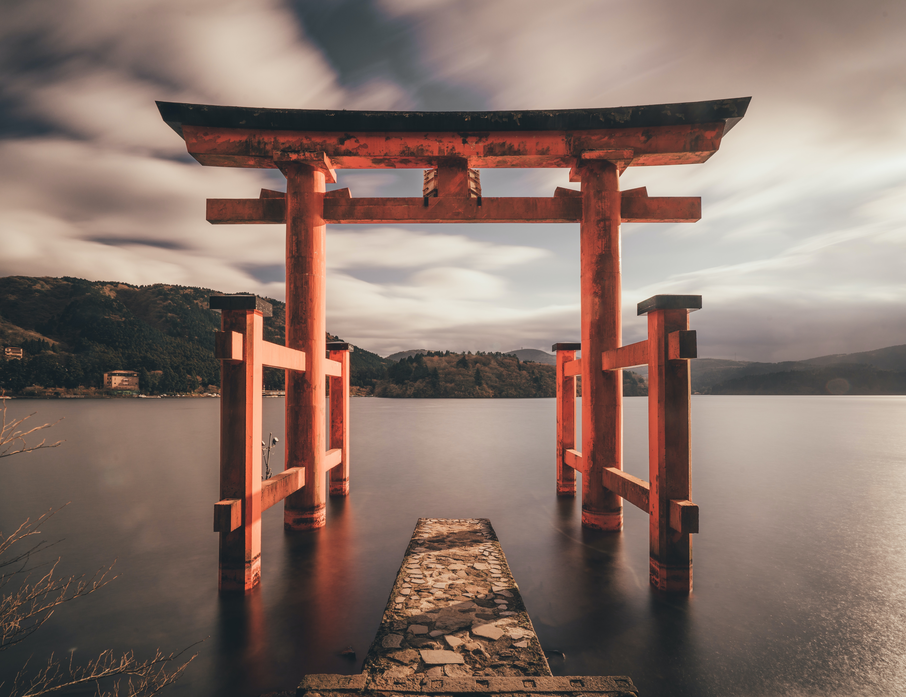
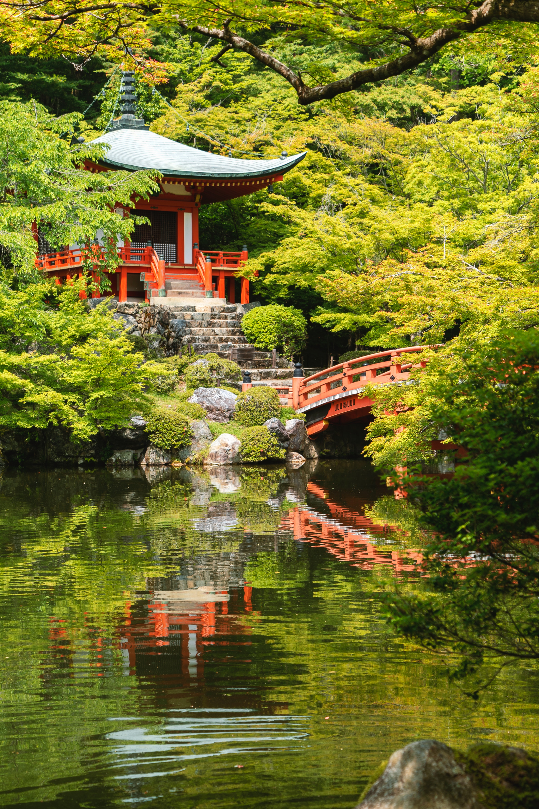
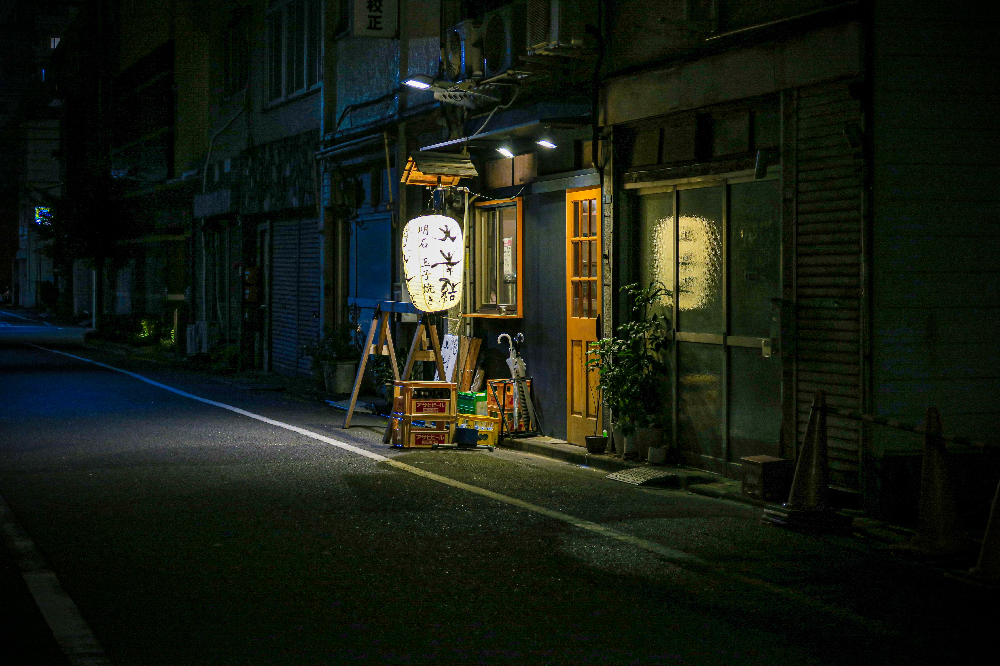

Découverte du Japon
traditionnel
a partir de
2800€
Partez à la découverte du Japon traditionnel lors de ce séjour de 9 jours et 8 nuits. Vous visiterez les villes historiques de Kyoto, Nara, et Hiroshima ainsi que les quartiers modernes de Tokyo et Osaka. Vous pourrez également découvrir la culture japonaise à travers des activités telles que la cérémonie du thé et la dégustation de sake.



Inclus dans le tarif
- Tous les transferts aéroport inclus
- Hébergement en hôtels 3* et 4* pendant 8 nuits
- Tous les repas inclus (petit déjeuner, déjeuner et dîner)
- Guide francophone privé pour les visites mentionnées dans l'itinéraire
- Toutes les activités mentionnées dans l'itinéraire
- Billet de train à grande vitesse pour le trajet Tokyo-Kyoto
- Billet de ferry pour l'île de Miyajima




Visite de Kamakura, ancienne capitale du Japon, cérémonie du thé et bien d’autres activités vous attendent...